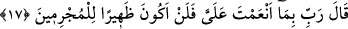
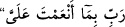
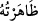
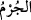
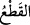

22. Medyen’e doğru yöneldiğinde: Umarım, Rabbim beni doğru yola iletir, dedi.
“Mûsâ: Rabbim!” Kıptîyi bir emir olmadan öldürmekle “doğrusu kendime
zulmettim (başıma iş açtım). Beni(m günahımı) bağışla, dedi, Allah da” bu tevbesine
binâen “onu” Mûsâ (a.s.)’ı “bağışladı.” O kullarının günahlarını bağışlamada ve
onlara rahmet edip acımada Gafûr ve Rahim’dir. “Çünkü, çok bağışlayıcı, çok
esirgeyici olan ancak O’dur.”
“ (dedi)” fiilinin araya girişi, birincisinin aksine ikincisi duâ ve münâcât olan iki
farklı kelâmı birbirinden ayırmak içindir.
17. Mûsâ: Rabbim! Bana lütfettiğin nimetlere andolsun ki, artık suçlulara (ve
suça itenlere) asla arka çıkmayacağım, dedi.
Mûsâ: Rabbim!” tevbemi kabul edip beni affetmek suretiyle “Bana lütfettiğin
nimetlere andolsun ki, artık suçlulara (ve suça itenlere) asla arka çıkmayacağım,”
onlara yardımcı olmayacağım, “dedi.
 ifâdesi, ya cevabı mahzuf bir kasemdir ki bu durumda takdiri şu
şekilde olur: “Beni mağfiret etmek suretiyle bana nimet vermenden dolayı senin üzerine
yemin ederim ki mutlaka tövbe edeceğim…” Ya da şefkat ve merhamet dilemedir ki bu
durumda anlamı şu şekilde olur: Bana verdiğin ihsanın hakkı için beni koru ki cürme
sevk edene asla yardımcı olmayayım.
Arapça’da  demek, “yanında olmakla onun sırtını kuvvetlendirdim” anlamına
gelir. “ (cürm)” kelimesi ise, “suç ve günah” mânâsına gelir ve fâiliyle alâkayı
kesmeyi gerektirir. Aslı “ (kesmek)” kelimesidir.
İbn Atâ der ki: Allah’ın nimetlerini bilen ârif; nimetin sâhibine muhâlefet edene
muvâfakat etmeyen kimsedir. Mün’imi (nimet vereni) bilen arif; hiç bir halde O’na
muhâlefet etmeyen kimsedir.
İbn Abbâs (r.a.)’den rivâyet edildiğine göre, o şöyle demiştir: Mûsâ (a.s.),
“mücrimlere destek olmayacağım” derken, mü’min olanını kâfir olanından istisnâ
etmemiş ve ileride geleceği gibi bu nedenle tekrar mücrimlere yardımla imtihan
olmuştur.
Fakîr (Bursevî) der ki: “Mücrim” ile burada kasdedilen; kötü bir fiil işleyen suçlu bir
kimsedir. Bu nedenle âyette zikredilen İsrâilli’nin kâfir olması gerekmez. Nitekim âyette
geçen “Bu, Mûsâ’nın kavminden” ve “ikisinin (kendisinin ve yardım isteyenin) de
düşmanı olan adamı” ifâdeleri, bu hususa delâlet eder. Şu kadar var ki İsrâiloğulları